Caregivers’ Mental Health
- Depress (mean of the following items, ranged 0-3):
- Little interest or pleasure in doing things
- Feeling down, depressed, or hopeless
- Anxiety (mean of the following items, ranged 0-3):
- Feeling nervous, anxious, or on edge
- Not being able to stop or control worrying
- Stress (ranged 0-4):
- Stress means a situation in which a person feels tense, restless, nervous or anxious, or is unable to sleep at night because his/her mind is troubled all the time. Do you feel this kind of stress before/after the COVID19 pandemic began?
- Loneliness (ranged 0-4):
- Prior to/Since COVID19 pandemic, please describe how often…I felt lonely
- Note that all scores were transformed to range 0-1 for comparison.
Between-Subject Analyses (Group-Level Means)
Mean Scores Breakdown by Disability Groups
- Children with vs. without disability comparison:
- During both pre-COVID and currently, caregivers of children with disability reported significantly higher mean levels of total mental health problems compared to caregivers of children without disability.
- During both pre-COVID and currently, caregivers of children with disability reported significantly higher mean levels of depression, anxiety, stress, and loneliness, respectively, compared to caregivers of children without disability.
- Pre-COVID vs. Current comparison:
- For caregivers of children with or without disability, reported total mental health problems and specific symptoms (depression, anxiety, stress, and loneliness) all significantly increased from pre-COVID to currently.
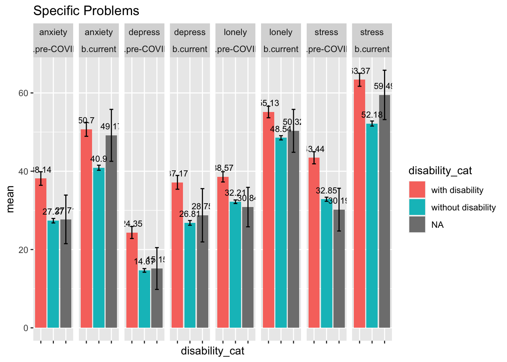
Mean Level Changes Over Time
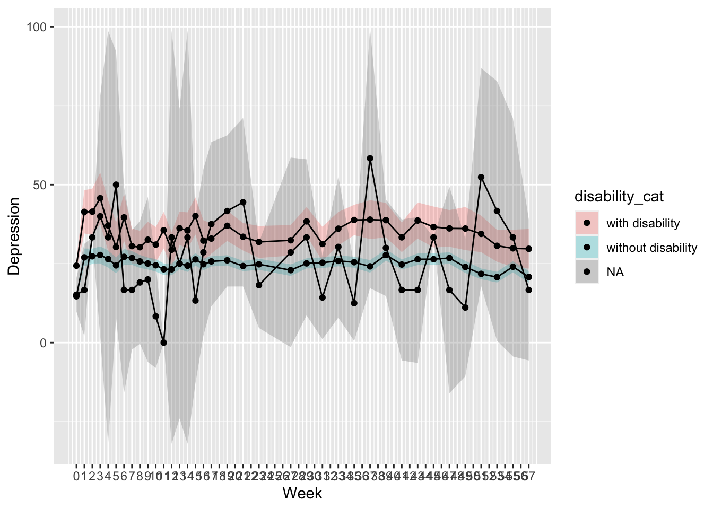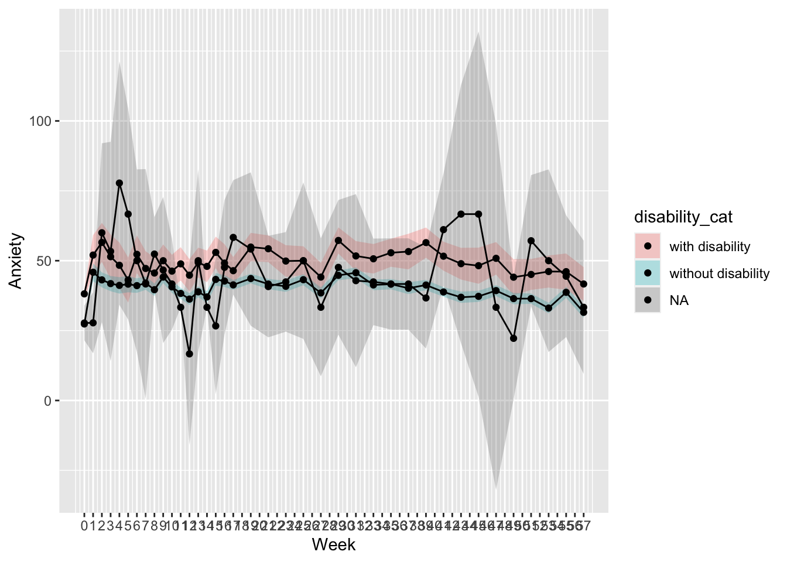 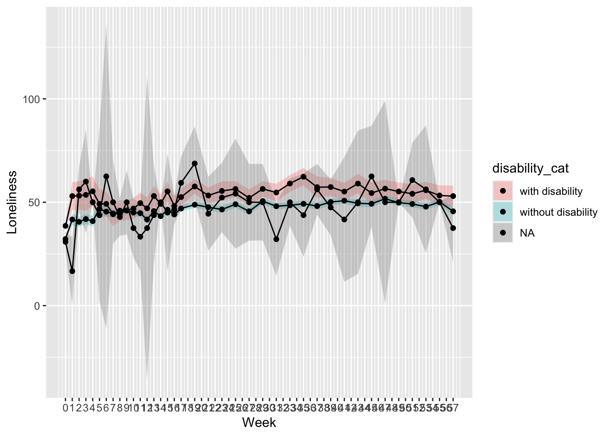
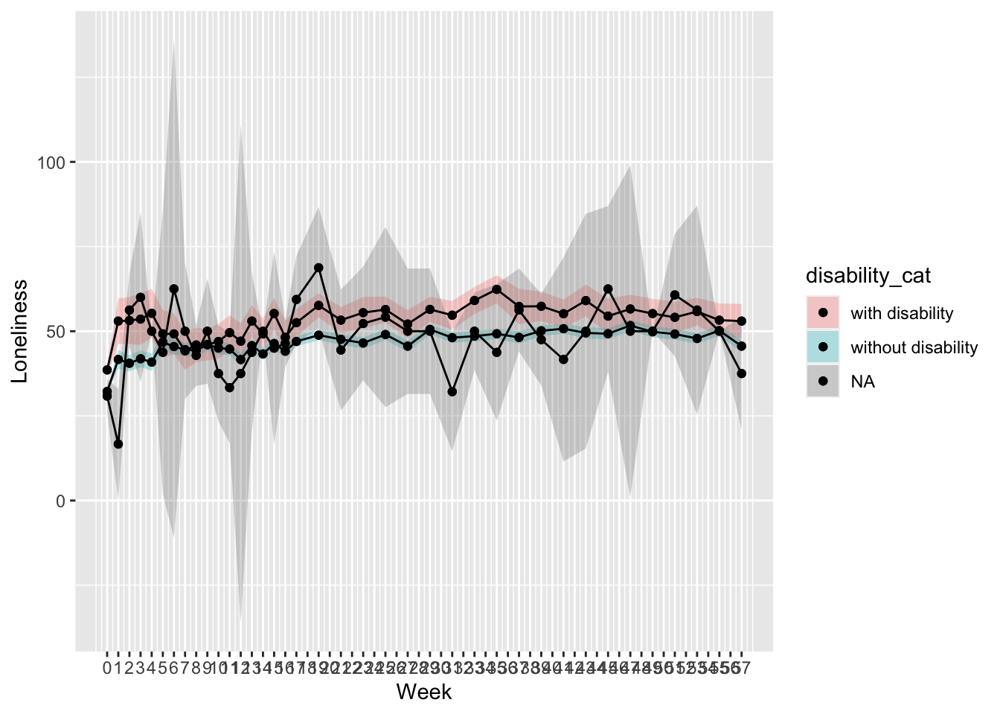
Within-Subject Analyses (Individual-Level Changes)
- Both caregivers of children with/without disability showed significant increases in mental health problems
- Caregivers of children without disability showed significantly more increases in total mental health problem as well as anxiety levels, from pre- to post-COVID, compared to caregivers of children with disability (likely due to the ceiling effect among caregivers of children with disability)
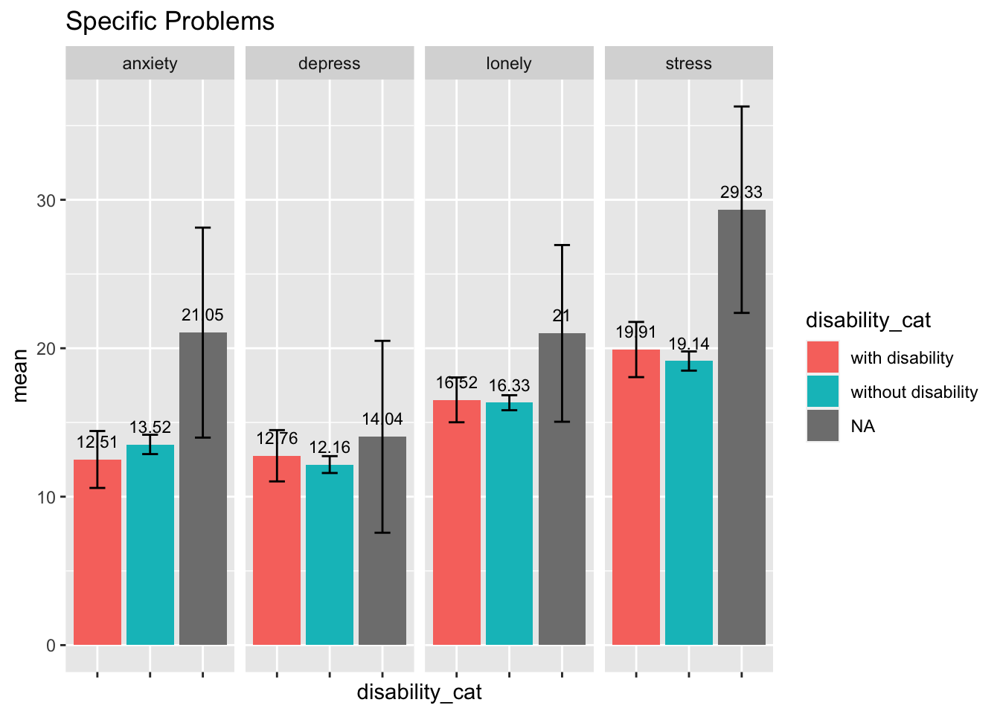
Children’s Behavioral Outcomes
- Externalizing Problems (ranged 0-2):
- Internalizing Problems (ranged 0-2):
Between-Subject Analyses (Group-Level Means)
Mean Scores Breakdown by Disability Groups
- Children with vs. without disability comparison:
- During both pre-COVID and currently, caregivers of children with disability reported significantly higher mean levels of children behavioral problems, including externalizing and internalizing problems, compared to caregivers of children without disability.
- Pre-COVID vs. Current comparison:
- For families of children with or without disability, caregivers reported significant increases in children’s mean levels of internalizing and externalizing problems from pre-COVID to currently.
Mean Level Changes Over Time
 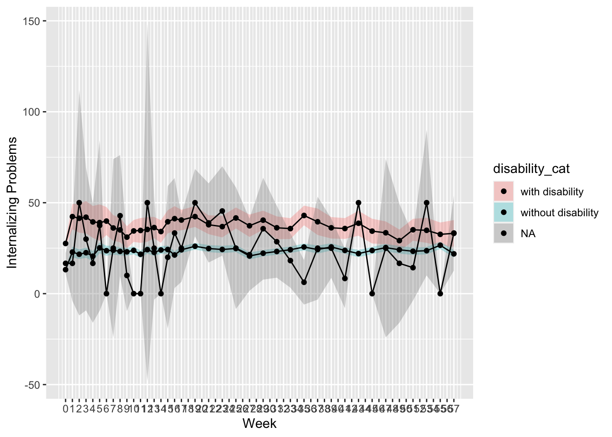
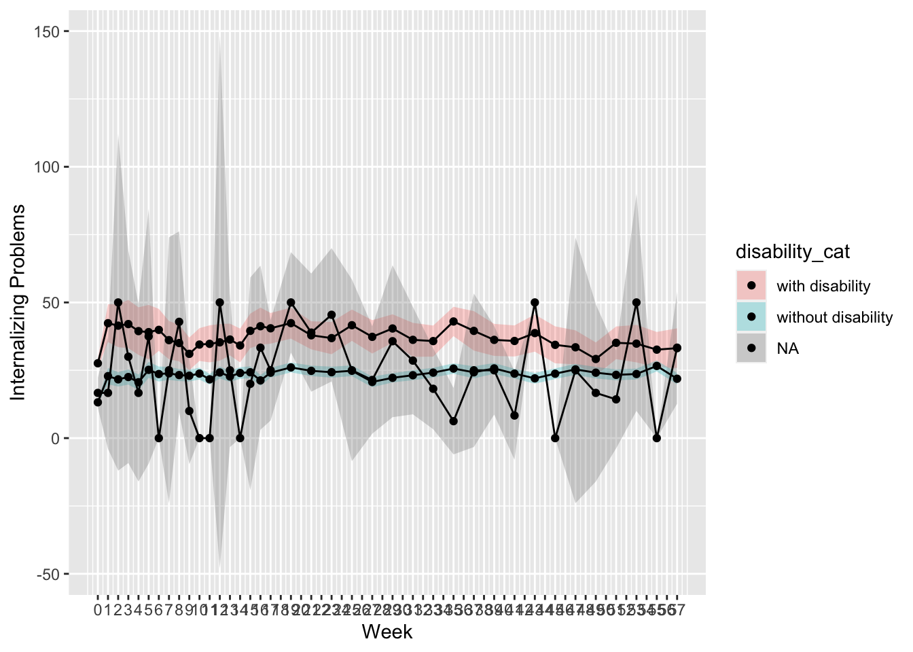
Within-Subject Analyses (Individual-Level Changes)
- Both caregivers of children with/without disability showed significant increases in mental health problems
- Reported increases in children’s internalizing and externalizing problems did not differ significantly by children’s disability status
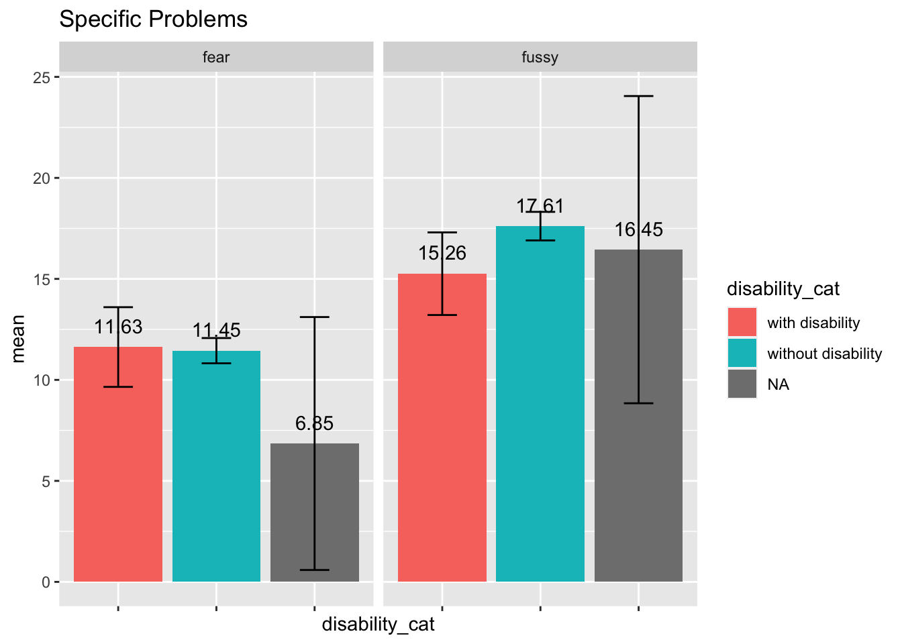
Material Hardship
- Questions asked at weeks 19, 21, 23, 25, 27, 29 follow-up surveys
- Worries (mean scores were calculated, ranged from 1 to 5):
- How worried are you about having enough money to pay for food to feed your household in the next month?
- If you rent the place you currently live, how worried are you about being evicted in the next month?
- If you own the home where you currently live, how worried are you about your mortgage being forceclosed in the next month?
- How worried are you about your utilities being turned off in teh next month?
- How worried are you about your household not being able to pay the full amount of the rent or mortgage or being late with a payment because your household cannot afford to pay in the next month?
- Hardship (sum scores were calculated, ranged 0-5):
- In the last 30 days, your household did not pay the full amount of the rent/mortgage or was late with a payment because your household could not afford to pay
- In the last 30 days, you did not have enough money to pay for food or feed your household
- In the last 30 days, you were evicted from the place you rented
- In the last 30 days, your mortgage was forceclosed on
- In th last 30 days, your household was not able to pay the full amount of gas, oil, or electricity bills
- In the last 30 days, the gas or electric company turned off service, or the oil company would not deliver oil
Worries in Material Hardship
- Caregiver of children with disability reported higher levels of worry about material hardship compared to caregivers of children without disability. This difference was significant.

Experienced Material Hardship in the Past 30 Days
Total Score of Experienced Material Hardship (range 0-6)
- The mean levels of experienced material hardship were relatively low. Caregiver of children with disability reported experiencing more material hardship in the past 30 days compared to caregivers of children without disability. This difference was significant.
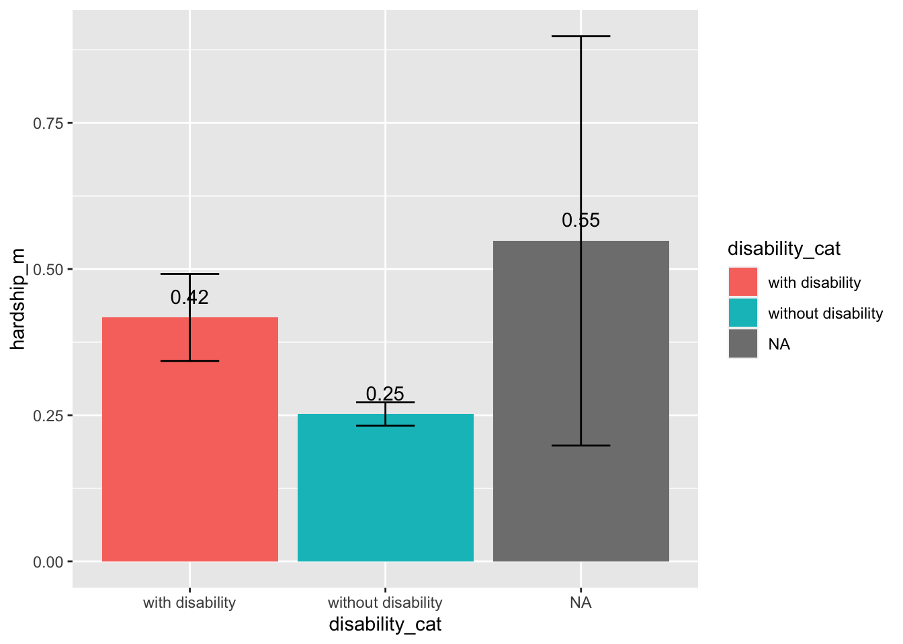
Percentage of Experienced Material Hardship Items
- Higher percentage of caregivers of children with disabilities reported experiencing material hardship in paying for utility bills (marginally significant), housing expenses, and food in the past 30 days, compared to caregivers of children without disabilities. But these differences were not statistically significant.
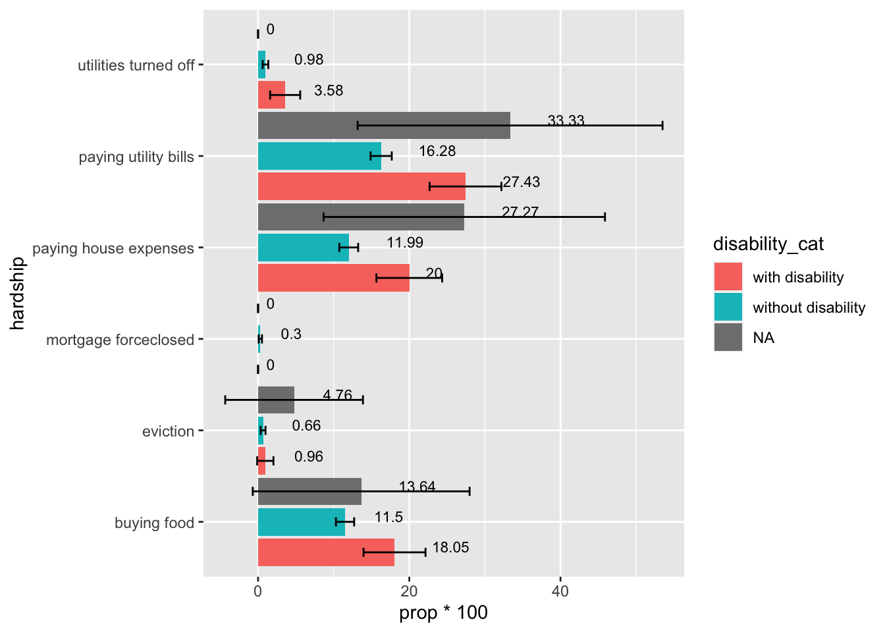
Health Interrupted
Delayed Healthcare
- Significantly higher percentage of caregivers of children with disability reported delaying healthcare visits (64.57%) compared to caregivers of children without disabilities (50.38%)
- Caregivers of children with disability reported significantly more number of delayed healthcare visits (M = 8.22) compared to caregivers of children without disabilities (M = 3.93)
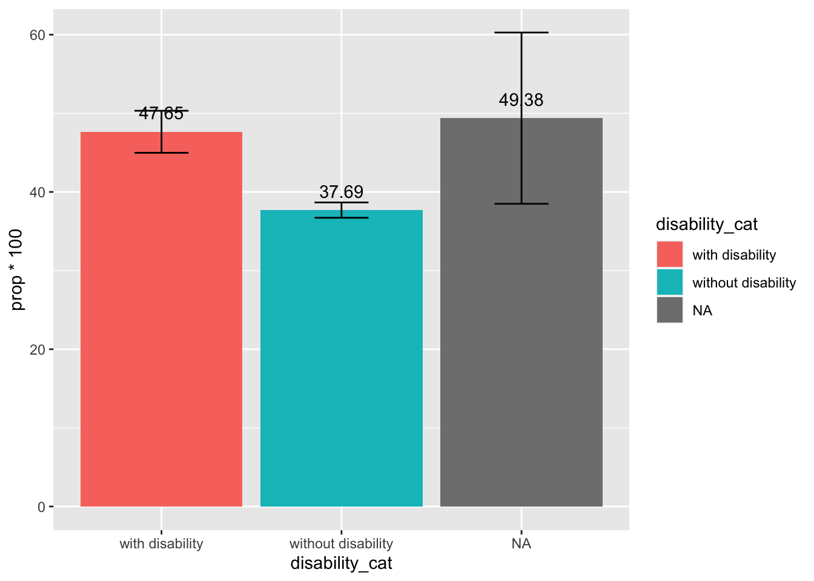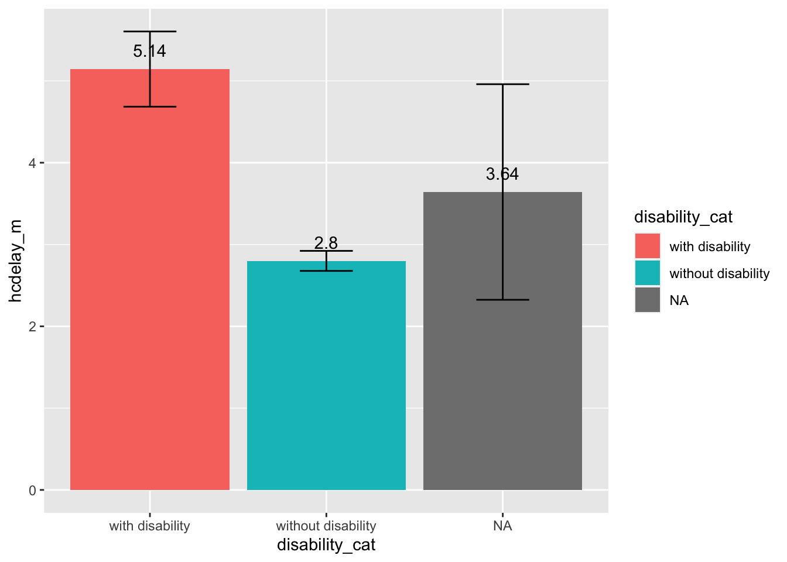
Main Reasons for Delayed Healthcare
- Among caregivers who reported delayed healthcare, those of children with or without disabilities both reported one major barrier as concerns of exposure to COVID-19 (>80%). However, caregivers of children with disabilites reported significantly more other barriers, such as cost, unable to get time away from work, inability to find childcare, and caring for family members.
Missing Well-baby/Well-Child Visits
- Significantly higher percentage of caregivers of children with disability reported missing well-baby visits (42.02%) compared to caregivers of children without disabilities (28.28%)
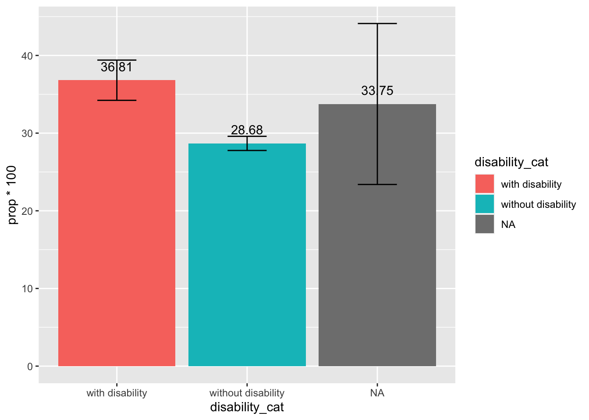
Which visits were missed
## Warning: attributes are not identical across measure variables;
## they will be dropped
 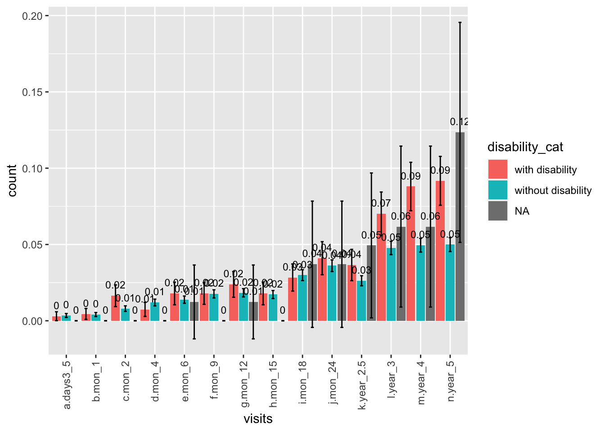
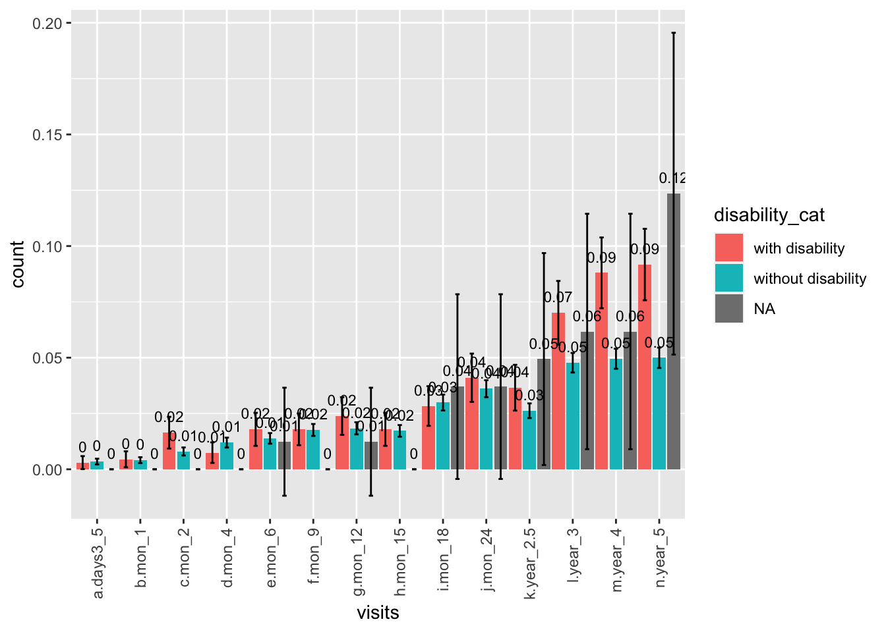
Reasons for Missed Well-Baby Visits
- Among caregivers who reported missing well-baby visits, caregivers of children with disabilities reported significantly more barriers in cost, unable to get time away from work, inability to find childcare, and caring for family members.
- Although majority caregivers in both groups reported concerns of COVID being one major reason for missing well-baby visits (>65%), smaller percentage of caregivers of children with disabilities reported this concern being the major reason (67%) compared to caregivers of children without disability (79%)
Missing Vaccine
- Significantly higher percentage of caregivers of children with disability reported missing vaccines (15.61%) compared to caregivers of children without disabilities (10.88%)
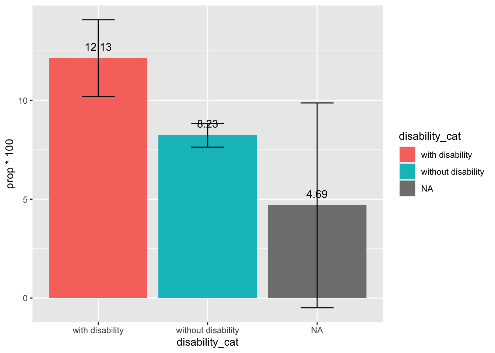
Childcare
Rates of Using Non-parental Childcare
- For both caregivers of children with and without disabilities, the usage of non-parental childcare significantly decreased from pre-COVID to May, and then slowly and gradually increased over time.
- At most time-points, the percentage of using non-parental childcare did not differ significantly by children’s disability status.
- At Week 5 (early May), families of children with disabilities reported significantly higher percentage of using non-parental childcare compared to families of children without disabilities.
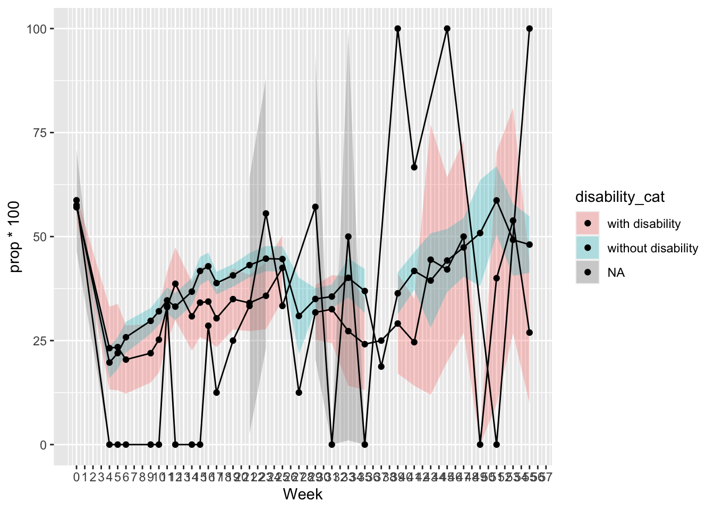
Rates of Using Center-based vs. Other Types of Childcare
- For caregivers of children with disabilities, the percentage of using center-based childcare kept decreasing from right-after COVID until June, and then slowly and gradually increased over time; Meanwhile, their percentage of using other types of childcare (home-based, paid, and unpaid) increased on Week 5 (early May), then decreased until June, and then slowly and gradually increased over time.
- For caregivers of children without disabilities, the percentage of using center-based and other types of non-parental childcare decreased from pre-COVID to right after COVID, and then gradually and slowly increased over time.
- At Week 5 (early May), families of children with disabilities reported significantly higher percentage of using center-based and other types of non-parental childcare compared to families of children without disabilities.
## Warning: Removed 3 row(s) containing missing values (geom_path).
## Warning: Removed 11 rows containing missing values (geom_point).
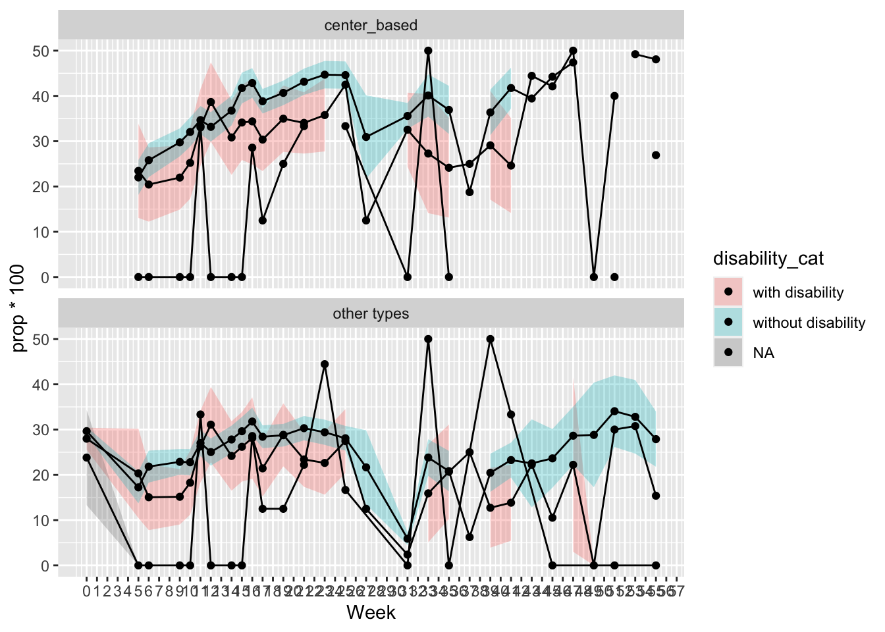
Caregivers’ Abilities to Return to Work Because of Childcare
- A higher percentage of caregivers of children with disabilities reported that they were concerned not able to return to work because of lacking appropriate childcare. But the difference was not statistically significant.
Social Support
- Data based on special topics asked in weeks 15, 19, 21, 23
Total Social Support Scores
Between-Subject Analyses (Group-Level Mean)
- Questions only asked at week 15
- Families of children with disabilities reported significantly lower levels of social support compared to families of children without disabilities
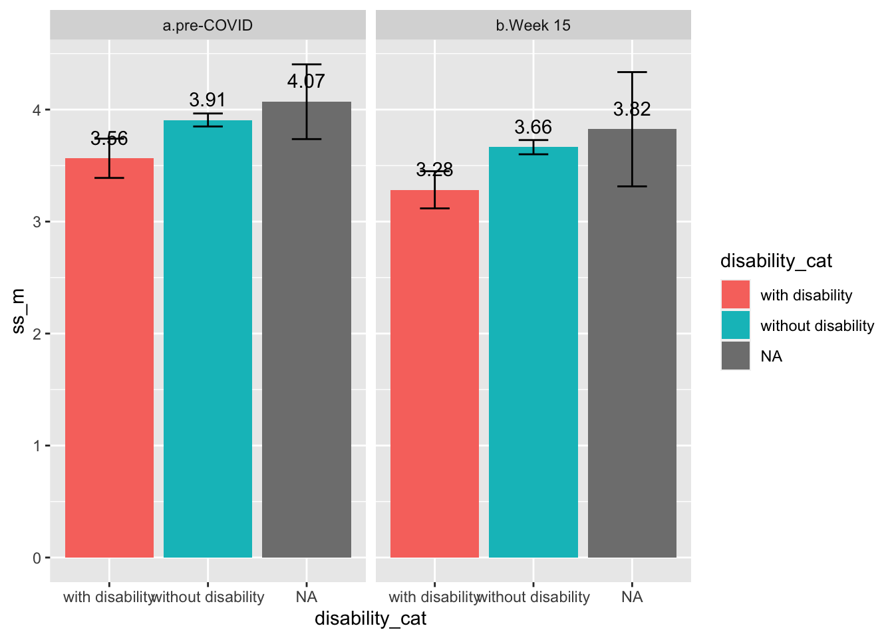
Within-Subject Analyses (Individual Pre-Post-COVID Changes)
- Families of children with and without disabilities both reported significantly decreased social support levels from pre- to post-COVID. The degrees of decreases across the two groups were comparable. Other categories of social support were comparable between two groups

Available Social Support Resources for Caregivers
- Compared to caregivers of children without disabilities, caregivers of children of disabilities reported significantly higher percentage of seeking social support from physical/mental health professionals, babysitter/nanny, and childcare providers
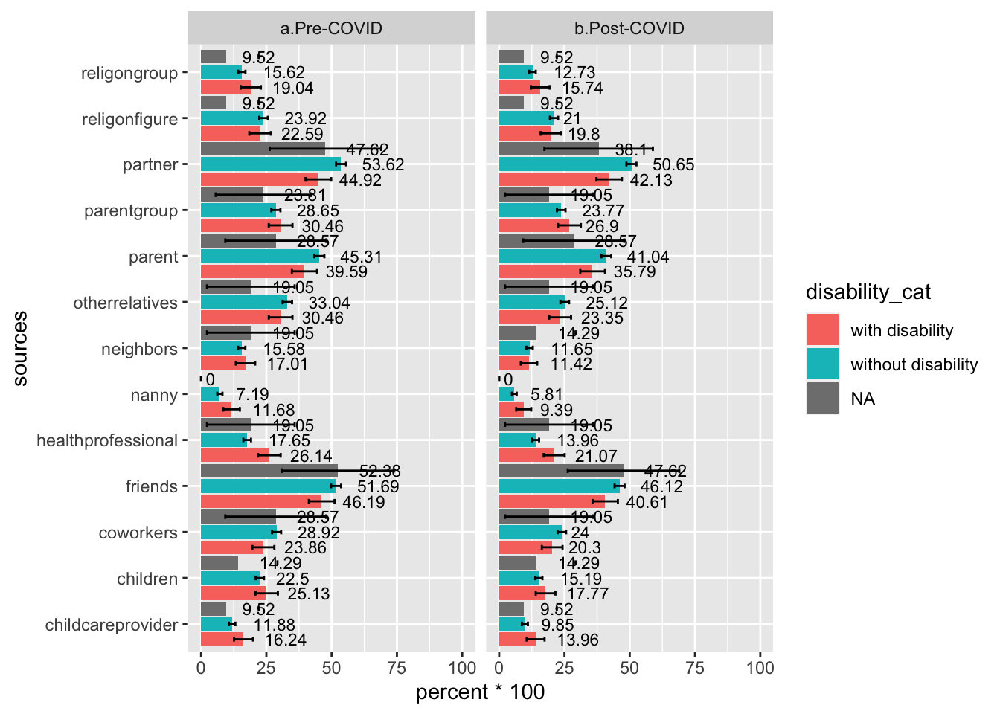
Associations of Social Support and Mental Health Problems
- Given that social support questions were only asked on week 15, the sample was decided by selecting all caregivers who responded to Week 15 surveys, and their subsequent two responses after Week 15. Final sample size of caregivers with children of special needs was 956
Among Families of Children with Special Needs n = 107
Associations Between Social Support & Follow-up Child Behavioral Problems
- Higher levels of social support at week 15 were linked to of children’s decreased behavioral problems during the second subsequent response (B = -6.05, p <.05), after controlling for children’s behavioral problems at week 15 (B = .60, p < .001).
##
## Call:
## lm(formula = C_fl2 ~ c_probs15 + ss_total_crt, data = ss_final_dsb)
##
## Residuals:
## Min 1Q Median 3Q Max
## -52.215 -13.202 -0.979 16.500 45.718
##
## Coefficients:
## Estimate Std. Error t value Pr(>|t|)
## (Intercept) 35.79399 9.46987 3.780 0.000273 ***
## c_probs15 0.60913 0.06855 8.886 3.68e-14 ***
## ss_total_crt -5.22878 2.31296 -2.261 0.026040 *
## ---
## Signif. codes: 0 '***' 0.001 '**' 0.01 '*' 0.05 '.' 0.1 ' ' 1
##
## Residual standard error: 21.06 on 96 degrees of freedom
## (14 observations deleted due to missingness)
## Multiple R-squared: 0.5134, Adjusted R-squared: 0.5033
## F-statistic: 50.64 on 2 and 96 DF, p-value: 9.653e-16
Path a:
##
## Call:
## lm(formula = P_fl1 ~ p_probs15 + ss_total_crt, data = ss_final_dsb)
##
## Residuals:
## Min 1Q Median 3Q Max
## -31.263 -10.199 -0.269 10.429 49.336
##
## Coefficients:
## Estimate Std. Error t value Pr(>|t|)
## (Intercept) 31.60192 9.05654 3.489 0.000719 ***
## p_probs15 0.65255 0.07206 9.055 1.08e-14 ***
## ss_total_crt -4.30710 1.95319 -2.205 0.029711 *
## ---
## Signif. codes: 0 '***' 0.001 '**' 0.01 '*' 0.05 '.' 0.1 ' ' 1
##
## Residual standard error: 16.39 on 101 degrees of freedom
## (9 observations deleted due to missingness)
## Multiple R-squared: 0.5908, Adjusted R-squared: 0.5827
## F-statistic: 72.91 on 2 and 101 DF, p-value: < 2.2e-16
Path b:
##
## Call:
## lm(formula = C_fl2 ~ P_fl1 + C_fl1 + ss_total_crt, data = ss_final_dsb)
##
## Residuals:
## Min 1Q Median 3Q Max
## -48.781 -14.797 -1.293 16.420 48.887
##
## Coefficients:
## Estimate Std. Error t value Pr(>|t|)
## (Intercept) 23.39369 12.23014 1.913 0.0588 .
## P_fl1 0.16155 0.11138 1.450 0.1502
## C_fl1 0.60683 0.08278 7.331 7.53e-11 ***
## ss_total_crt -3.42275 2.59038 -1.321 0.1896
## ---
## Signif. codes: 0 '***' 0.001 '**' 0.01 '*' 0.05 '.' 0.1 ' ' 1
##
## Residual standard error: 20.96 on 95 degrees of freedom
## (14 observations deleted due to missingness)
## Multiple R-squared: 0.5227, Adjusted R-squared: 0.5076
## F-statistic: 34.68 on 3 and 95 DF, p-value: 3.16e-15
Among Families of Children without Special Needs n = 789
Associations Between Social Support & Follow-up Child Behavioral Problems
- Higher levels of social support at week 15 were linked to of children’s decreased behavioral problems during the second subsequent response (B = -3.73, p <.001), after controlling for children’s behavioral problems at week 15 (B = .62, p < .001).
##
## Call:
## lm(formula = C_fl2 ~ c_probs15 + ss_total_crt, data = ss_final_ndsb)
##
## Residuals:
## Min 1Q Median 3Q Max
## -72.820 -13.640 -1.992 12.807 87.829
##
## Coefficients:
## Estimate Std. Error t value Pr(>|t|)
## (Intercept) 26.62174 4.12537 6.453 2.2e-10 ***
## c_probs15 0.57167 0.03293 17.361 < 2e-16 ***
## ss_total_crt -3.30793 0.94632 -3.496 0.000507 ***
## ---
## Signif. codes: 0 '***' 0.001 '**' 0.01 '*' 0.05 '.' 0.1 ' ' 1
##
## Residual standard error: 20.86 on 623 degrees of freedom
## (73 observations deleted due to missingness)
## Multiple R-squared: 0.3879, Adjusted R-squared: 0.3859
## F-statistic: 197.4 on 2 and 623 DF, p-value: < 2.2e-16
Path a:
##
## Call:
## lm(formula = P_fl1 ~ p_probs15 + ss_total_crt, data = ss_final_ndsb)
##
## Residuals:
## Min 1Q Median 3Q Max
## -47.525 -8.408 -0.622 8.613 48.413
##
## Coefficients:
## Estimate Std. Error t value Pr(>|t|)
## (Intercept) 19.1124 3.1828 6.005 3.15e-09 ***
## p_probs15 0.7237 0.0258 28.048 < 2e-16 ***
## ss_total_crt -2.5883 0.6677 -3.876 0.000117 ***
## ---
## Signif. codes: 0 '***' 0.001 '**' 0.01 '*' 0.05 '.' 0.1 ' ' 1
##
## Residual standard error: 13.57 on 663 degrees of freedom
## (33 observations deleted due to missingness)
## Multiple R-squared: 0.655, Adjusted R-squared: 0.654
## F-statistic: 629.5 on 2 and 663 DF, p-value: < 2.2e-16
Path b:
##
## Call:
## lm(formula = C_fl2 ~ P_fl1 + C_fl1 + ss_total_crt, data = ss_final_ndsb)
##
## Residuals:
## Min 1Q Median 3Q Max
## -53.768 -12.169 -1.871 11.628 79.255
##
## Coefficients:
## Estimate Std. Error t value Pr(>|t|)
## (Intercept) 13.40380 4.82212 2.780 0.00561 **
## P_fl1 0.17987 0.04207 4.276 2.21e-05 ***
## C_fl1 0.54880 0.03255 16.859 < 2e-16 ***
## ss_total_crt -1.27726 0.99744 -1.281 0.20083
## ---
## Signif. codes: 0 '***' 0.001 '**' 0.01 '*' 0.05 '.' 0.1 ' ' 1
##
## Residual standard error: 19.95 on 622 degrees of freedom
## (73 observations deleted due to missingness)
## Multiple R-squared: 0.4414, Adjusted R-squared: 0.4387
## F-statistic: 163.8 on 3 and 622 DF, p-value: < 2.2e-16
Social Support
Total Social Support Scores
Between-Subject Analyses (Group-Level Mean)
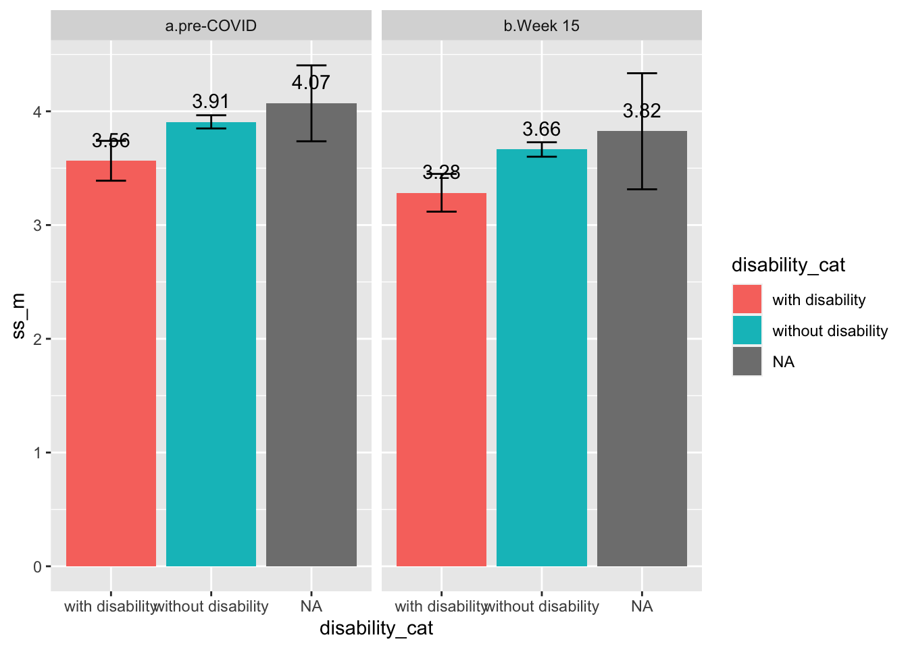
Within-Subject Analyses (Individual Pre-Post-COVID Changes)
Available Social Support Resources for Caregivers
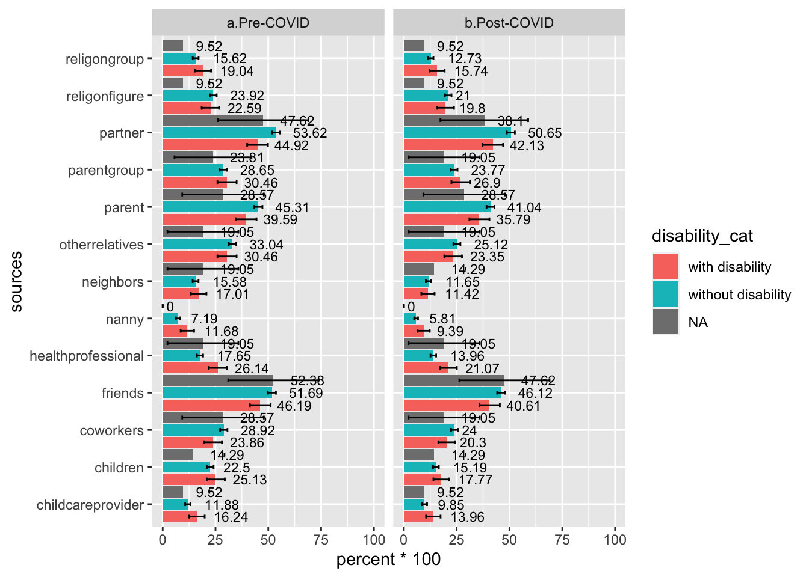
Associations of Social Support and Mental Health Problems
Among Families of Children with Special Needs n = 107
Associations Between Social Support & Follow-up Child Behavioral Problems
Mediation Analyses: Social Support & Subsequent Caregivers’ Mental Health Problems & Subsequent Children’s Behavioral Problems
Path a:
Path b:
Testing Indirect Effect using RMediation Method
Among Families of Children without Special Needs n = 789
Associations Between Social Support & Follow-up Child Behavioral Problems
Mediation Analyses: Social Support & Subsequent Caregivers’ Mental Health Problems & Subsequent Children’s Behavioral Problems
Path a:
Path b:
Testing Indirect Effect using RMediation Method